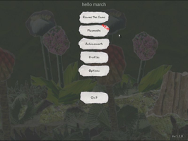
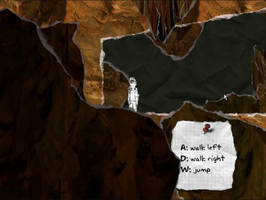
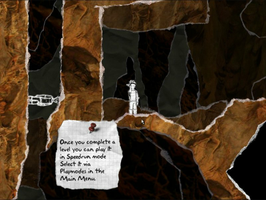

And Yet It Moves
Dieser Artikel wurde für die folgenden Ubuntu-Versionen getestet:
Ubuntu 14.04 Trusty Tahr
Zum Verständnis dieses Artikels sind folgende Seiten hilfreich:
And Yet It Moves  ist ein Spiel, welches die Welt auf den Kopf stellt. In 17 Leveln steuert man die Spielfigur mit der Tastatur durch immer komplizierter werdende Höhlenwelten und immer engere Durchgänge. Rätsel und der Grafikstil in Form einer Collage runden den Spielgenuss ab...
ist ein Spiel, welches die Welt auf den Kopf stellt. In 17 Leveln steuert man die Spielfigur mit der Tastatur durch immer komplizierter werdende Höhlenwelten und immer engere Durchgänge. Rätsel und der Grafikstil in Form einer Collage runden den Spielgenuss ab...
Zur Steuerung kann ebenfalls ein Controller verwendet werden.
|  |  |  |
| Hauptmenü | Tutorial | Spieleszene |
Installation¶
Vor der Installation des Spiels sollte das folgende Paket aus den Quellen aufgespielt werden [1]:
libopenal1 (universe)
 mit apturl
mit apturl
Paketliste zum Kopieren:
sudo apt-get install libopenal1
sudo aptitude install libopenal1
Desura¶
Das Spiel kann über die Internetseite oder den Client zur Spieleliste hinzugefügt und gestartet werden [3].
Humble Indie Bundle #3¶
Das Spiel aus der Aktion Humble Indie Bundle als .deb-Paket herunterladen und installieren [2] - z.B. nach ~/Spiele/ayim.
Das Spiel ist anschließend im Menü unter "Anwendungen -> Spiele -> And Yet It Moves" zu finden.
Nach dem ersten Start des Spiels werden im Homeverzeichnis die Einstellungen, Logs und Spielstände im Ordner ~/.Broken Rules/And Yet It Moves gespeichert.
Einstellungen¶
Über "Options" im Hauptmenü kann die Belegung der Tastatur und des Controllers angepaßt werden. Im Reiter "Video / Audio" können verschiedenste Detailstufen und Effekte zu- und abgeschaltet werden. Hier kann ebenfals eigestellt werden ob das Spiel im Fenster- oder Vollbildmodus laufen soll.
Demo¶
Ein Demo des Spiels kann von andyetitmoves.net  heruntergeladen und wie die Vollversion installiert werden.
heruntergeladen und wie die Vollversion installiert werden.
Tastenkürzel¶
| Tastenkürzel | |
| Taste(n) | Funktion |
| Alt + ⏎ | Vollbild- / Fenstermodus |
| A + D | Charakter nach links/rechts bewegen. |
| W | Springen |
| ← + → | Level um 90° drehen. |
| ↑ | Level um 180° drehen. |
| - | Pause |
| ⌫ | Levelneustart |

Infobox¶
| And Yet It Moves | |
| Originaltitel: | And Yet It Moves |
| Genre: | Puzzle |
| Sprache: | |
| Veröffentlichung: | 2009 |
| Publisher: | Blendo Games |
| minimale Systemvoraussetzungen: | Prozessor mit 1GHz / 512 MB RAM / 50 MB Festplattenplatz / OpenGL-kompatible Grafikkarte |
| Medien: | Download |
| Strichcode / EAN / GTIN: | - |
| Läuft mit: | nativ |
- Erstellt mit Inyoka
-
 2004 – 2017 ubuntuusers.de • Einige Rechte vorbehalten
2004 – 2017 ubuntuusers.de • Einige Rechte vorbehalten
Lizenz • Kontakt • Datenschutz • Impressum • Serverstatus -
Serverhousing gespendet von